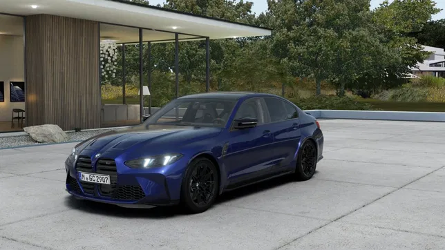

<script>
    let img1 = document.getElementById("img1");
    let img2 = document.getElementById("img2");

    function zamiana() {
        [img1.src, img2.src]= [img2.src, img1.src];
    }
    setInterval(zamiana, 5000);
</script>
